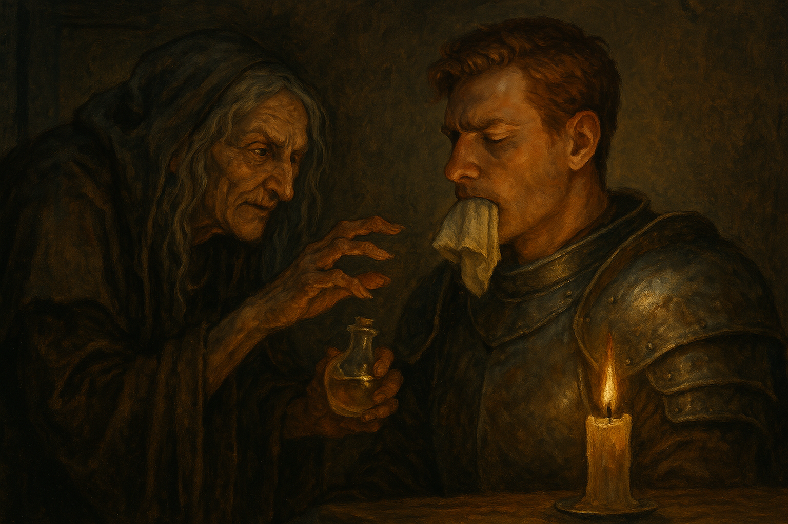

Chapter 3: A Good Place
Korringfield Reunion


Korringfield Reunion
15048.10.02
跪在爵士宅邸門口的男子，自稱為雷米，是個半妖精浪客。他說他腦中有一個聲音，要他加入「台北市議員」。不過令人起疑的是，他的脖子上掛著冒險者們有些熟悉的紫色墜飾項鍊，也就是烏柯在訣別信提到自己遺失的那條，寄宿著多姆尼爾的項鍊。眾人對雷米問話，不敢肯定他是否可信。
我很會偷東西，但是這條項鍊是我撿到的。
— 雷米，15048.10.02
在問話到一半時，背後傳來了弗列里爵士的腳步聲。大家決定先把門關上，讓動彈不得的雷米繼續跪著，先不讓爵士看見這位在他家門口洗門風的陌生男子。
爵士領著大家，來到了昨日享用晚餐的餐廳，並請廚師為大家準備一份他平日享用的早餐：一隻烤全雞。昨日已經多吃了不少蛋糕的米多莉向廚師要了兩隻。在用餐過程中，眾人思索著到底要不要讓雷米加入冒險團隊，中途米多莉還帶著那隻額外的烤雞到爵士家門口，試圖讓雷米吃點東西，卻發現雷米似乎連吞嚥都有困難。後來YHWH也來到了雷米面前，和米多莉商討決策。兩人一同回到餐廳，決定讓大家投票表決是否讓雷米加入，而弗列里爵士將作為大家匿名投票的公正第三方。經過大家的表決後，爵士宣布，這位他還未見過的盜賊，將加入台北市議員的行列，和大家一起繼續冒險。嗚兮噢尼和米多莉一起到門口將雷米抬到餐廳，將他放在桌上，並要他發誓不會偷自己夥伴的東西。而在眾人認可讓雷米加入台北市議員後，多姆尼爾便釋放了他的枷鎖，讓雷米能夠自由活動。雷米狼吞虎嚥地把整隻烤雞吃得一乾二凈。
吃飽後，弗列里爵士要大家準備一下，到大廳集合。他要帶大家去個好地方。眾人興致勃勃，爵士特別提醒大家不用帶錢，他會為大家出錢。
走過了市中心的街區，弗列里爵士停在了一個石造的拱門前，邀請大家推門進入。家亨推了開門，卻發現裡面十分吵雜，充滿了汗臭味。這和他想的似乎有所出入。爵士帶了大家進入寇林菲爾德球場，並在售票亭為大家各買了一張球賽的票券。今天是寇林菲爾德的主場，客場球隊是麥克嵩。這裡是帕拉丁離開寇林菲爾德前很喜歡來看球賽的地方。爵士和帶了錢出門的YHWH各自和售票亭買了彩券。
經過了幾個小時，球賽結束。寇林菲爾德大獲全勝。場內大家都非常開心。YHWH跟著弗列里爵士一起去售票亭兌換獎金，得到了100金幣。同時，雷米開始物色身邊的陌生人是否有值得偷取的寶物，最後決定先不要搞事。
走到球場外，帕拉丁告訴弗列里爵士，夥伴家亨期待的「好地方」似乎不是這種好地方，而是那種有會員制的。爵士恍然大悟，告訴帕拉丁他這就帶大家去。走了一段路，大夥停在一個沒有招牌的店門口，爵士自行推開了門。裡面是個有包廂的高級餐廳。爵士熟門熟路的走進了其中一間包廂，讓大家入座，也點了各種不同料理。然而，家亨的表情似乎又陷入了尷尬。這也不是他所想的「好地方」。餐桌上，大家吃著，也向爵士詢問了關於麥克嵩的事。爵士告訴大家，麥克嵩什麼人都有，如果要去，要很小心。不過如果有需要，報上他的名字，國王會願意幫助他們的。帕拉丁也在爵士耳邊再次詢問了關於「好地方」的事。在多加提示後，爵士終於理解了，並向他們保證，會帶他們去他常去的那家同志酒吧。帕拉丁急忙撇清，家亨想去的應該不是這種。爵士只好趕緊告訴他們，附近還有另一家，叫做「七彩天堂」的店，應該就是家亨想去的地方。
吃飽後，終於面露喜色的家亨與大家一起跟著弗列里爵士，先經過了有同志酒吧的巷子，在走到七彩天堂的巷口。爵士遞給了大家各50枚金幣，讓大家好好去開心一番。雷米、米多莉和薩梅爾都把自己的50枚金幣遞給了家亨，想讓他玩得更開心。於是，家亨、帕拉丁、雷米和米多莉便前往了七彩天堂。而嗚兮噢尼則跟著爵士一起前往同志酒吧。龍恩決定直接回到宅邸，薩梅爾在街上逛逛，而YHWH則跑了一趟打鐵鋪與魔法商店。
一個人類、一隻牛頭怪，以及一隻哥布林，走進了同志酒吧。
— 一則寇林菲爾德當地笑話的開頭
帕拉丁和米多莉護送家亨進入七彩天堂後，便暫時到巷子裡等他出來。雷米則在店內東張西望，想偷點什麼東西。家亨在櫃台出示了兌換券後，便來了三名年輕女子：一名人類、一名半妖精，以及一名妖精，領著他走入了一間大房間，並將門關上。雷米唬弄著櫃檯的服務人員，說自己剛剛不小心弄丟了一枚紅色戒指，希望對方能去幫他找找。雷米則運用這段時間，翻了翻櫃檯內，看見了至少4000枚金幣，以及一小疊優惠券。雷米偷走了一張優惠券。
龍恩回到爵士宅邸，敲了敲門，羅莎開了門，熱情的歡迎他回來，而龍恩便趕緊回到房間閉關打坐。
嗚兮噢尼與神王尼可跟隨著弗列里爵士來到了同志酒吧。爵士為大家點了招牌的特調，便聊了起來。嗚兮噢尼詢問了更多關於麥克嵩以及帕拉丁父親的事，爵士作了簡短的回覆。後來，一名瘦高的男子前來尋找爵士，爵士便也跟著他去了店的後面。不久後米多莉也來到了店內，和嗚兮噢尼一起與吧檯內的服務生聊天。嗚兮噢尼和米多莉打聽了剛剛來找爵士的那名男子，他也是土生土長的寇林菲爾德人，不過似乎有著不太可告人的工作內容。後來，一名壯碩男子前來和嗚兮噢尼搭話，嗚兮噢尼則轉將神王尼可介紹給了這名男子。男子見到狀況有些不對勁，便很快離開了。
離開七彩天堂的帕拉丁，看見巷子口走來了兩個人影。那兩人，是他的兩位哥哥。為了避免正面接觸，他便躲了起來，目送他們兩人遠離巷子。雷米此時正好走了出來，和帕拉丁簡單聊了一下，接著便離開，去寇林菲爾德的盜賊公會。公會內看起來沒有人，只有高懸的排行榜。雷米看了看任務表，發現目前沒有尚未解決的任務。不過大約兩週後，這裡似乎會有個大慶典，有不少外地人會來，被公會認定是適合偷東西的好時機。雷米拿了張紙，把自己近期偷的東西用賊話寫了下來，塞在公會內辦公室的門縫。在他轉頭回來後，發現紙條似乎已經不見了。
YHWH回到了七彩天堂的巷內，看見帕拉丁正在等待家亨。帕拉丁告訴他自己剛剛似乎看見了一隻黑貓，想起他有重要的事，必須跟隨這那隻黑貓走，但是又怕家亨走丟，於是不放心，才待在這裡。YHWH承諾會幫忙顧著家亨，於是在黑貓再次出現後，帕拉丁便義無反顧地跟了上去。
家亨踏出七彩天堂時，已經是大約兩小時後了。雖然身體依然直挺挺的，他卻感到體內有股不舒服感，不確定是不是出了什麼狀況。
帕拉丁跟著黑貓，穿梭在寇林菲爾德錯綜復雜的小巷，直到他也認不得這些巷子了。黑貓停在了一間再普通不過的屋子前，坐了下來。帕拉丁輕易推開了門，進入了漆黑的屋子內，裡頭只有一根點燃的蠟燭照明著。帕拉丁喊了一聲後，房內的另一扇門打了開來，是昨日見到的老太太。老太太示意帕拉丁席地而坐。他向帕拉丁確認了昨日談好的交易，遞出了一個空瓶子，告訴帕拉丁要把這瓶子內裝的東西，讓他父親在一日內吞進肚子裡。老太太又遞出了另一個裝滿藥水的瓶子，要怕拉丁喝下去，當作等等的麻藥，並遞給他一條毛巾，以免等等麻藥效果不夠，疼痛感太強烈時可以咬住。
怕拉丁一口喝下了麻藥，昏了過去。
15048.10.02
Kneeling at the Flaerry's door, was a half-elf rogue, named Lemmy. He said that there was a voice telling him to join the "Taipei City Council". Suspiciously, a familiar purple necklace was hanging on his neck, which was also the one possessed by Domneil, and lost by Uko, which was mentioned in his letter. The party started asking Lemmy, not knowing if he was trustworthy or not.
I'm good at stealing things, but I didn't steal this necklace
— Lemmy, 15048.10.02
In the midst of asking, the party heard the footsteps of Syr Flaerry. They decided to close the door first, and made Lemmy, who couldn't move, kept on kneeling. They don't want Syr Flaerry to see this strange man at his door.
Syr Flaerry led the party to the dining room where they had dinner last night, and asked the chefs to prepare his ordinary breakfast for the party: a roast chicken. Midori, who already had quite a lot of cake yesterday, asked the chef for two chickens. While eating, the party discussed on whether to let Lemmy join the party. Midori even brought the extra roast chicken to the door, trying to let Lemmy eat, only to find that Lemmy couldn't even swallow. Later, YHWH joined Midori, and had a discussion. The two returned to the table, and decided to let the party vote to see if they want Lemmy to join. Syr Flaerry would be the impartial third party in the anonymous voting. After the vote, Syr Flaerry announced that this thief, whom he hadn't seen yet, would join the Taipei City Council. Usioni and Midori came to the door and carried Lemmy to the restaurant table, making him swear that he wouldn't steal from his party. After the whole party allow Lemmy to join, Domneil released him, and Lemmy could finally move at his well. He at the whole roast chicken fast and completely.
After the meal, Syr Flaerry asked the party to prepare and later gather at the lobby. He was taking them to a good place. The party got excited, and Syr Flaerry reminded them not to bring money, he would pay for them.
Passing downtown, Syr Flaerry stopped at a wooden gate, inviting them to enter. Jiaheng pushed opened the door, only to find it noisy inside, and filled with body odor. This was far from what he expected. Syr Flaerry led the party into the Korringfield Stadium, and bought a ticket for each of them. It was a home game for Korringfield, visited by the Macksohn team. This was the stadium that Paladin enjoyed before he left Korringfield. Syr Flaerry and YHWH even bought lottery tickets at the stand.
Hours passed, and the game ends. Korringfield won the game. The audiences were happy. YHWH and Syr Flaerry exchanged for their lottery at the stand, and got 100 gold pieces. At the same time, Lemmy started checking if there were any treasures that he could steal from strangers, but decided to stay put for now.
Out of the stadium, Paladin told Syr Flaerry that this didn't seem like what his companion, Jiaheng, expected when he mentioned "a good place". He wanted the place that had "membership". Syr Flaerry got the idea, and told Paladin that he would bring them right away. After some walk, the party stopped at a store with no sign. Syr Flaerry pushed open the door. This was a high-class restaurant with private rooms. Syr Flaerry walked into a private room, like it was in his own house. He ordered different types of cuisines for the party. However, Jiaheng looked awkward. This wasn't what he expected from "a good place", either. The party asked Syr Flaerry about Macksohn on the table while eating. Syr Flaerry told them that there were all kinds of people in Macksohn, and they needed to be extra careful. But, if needed, they could use his name. The king would help. Paladin also asked Syr Flaerry about the good place again. With extra clues, Syr Flaerry finally understood, and promised them that he would take them to the gay bar that he usually went to. Paladin hurriedly distanced himself from the situation, that this would not be the one Jiaheng wanted to visit. Syr Flaerry later told them that there was a "Rainbow Paradise" nearby, which should be where Jiaheng wanted to go.
After the meal, Jiaheng, who finally had a smile, followed the party and Syr Flaerry, across the alley with the gay bar, and to the one with Rainbow Paradise. Syr Flaerry handed everyone 50 gold pieces, wanting them to have fun. Lemmy, Midori, and Samael gave their 50 gold pices to Jiaheng, hoping he would have a even better time. And so, Jiaheng, Paladin, Lemmy, and Midori headed to Rainbow Paradise. Usioini followed Syr Flaerry to the gay bar. Ron decided to go back to the Flaerry house, while Samael went shopping. YHWH went to the blacksmith shop and magic item shop.
A human, a minotaur, and goblin, walked into a gay bar.
The beginning of a Korringfield local joke
Paladin and Midori left the alley after escorting Jiaheng into the Rainbow Paradise. Lemmy stayed at the store, trying to steal something. Jiaheng handed out his coupon, and three young ladies came out: a human, a half-elf, and an elf, leading him into a big room. Lemmy lied to the clerk that he just lost a red ring, hoping the clerk help look for him. Lemmy used the time to flip through the counter, and found at least 4000 gold pieces, and a stack of coupons. He stole a coupon.
Ron went back to the Flaerrys, knocked on the door. Rosa opened, and welcomed him passionately. Ron quickly went back to his room to meditate.
Usioni and King Knicol followed Syr Flaerry into the gay bar. Syr Flaerry oredered everyone a signature special, and had a chat. Usioni asked more about Macksohn and Paladin's father, and Syr Flaerry gave brief replies. After that, a skinny tall man came to Syr Flaerry, with Syr Flaerry leaving with him to the back of the bar. Not after long, Midori also came to the bar, chatting with Usioni and a bartender. They asked for the name of the skinny tall man, learning that he was also a native Korringfielder, but had a secret job. Not long after, a strong guy came to talk to Usioni. Usioni introduced King Knicol to the man The man felt weird and left.
After leaving the Rainbow Paradise, Paladin saw two individuals walking into the alley. The two looked a lot like his brothers. To avoid conflict, Paladin hid, until seeing them walk away. Lemmy happened to walk out of Rainbow Paradise, chatted with Paladin for a wahile, and left for the thieves' guild in Korringfield. There seemed to be no one in the guild, only a leaderboard. Lemmy checked on the task list, but didn't find any uncompleted task. However, two weeks later, ther seemed to be a big festival, and a lot of foreigners would come visit. This would be a good timing to steal some stuff. Lemmy took a piece of paper, and wrote down what he stole recently in thieves' cant, putting it into the gap at the office door. When he turned back, the paper was gone.
When YHWH came back to the alley, he saw Paladin waiting for Jiaheng. Paladin told him that he saw a black cat earlier, that he had something important to do. He had to follow the black cat, but was also afraid if Jiaheng would get lost. YHWH promised to look out for Jiaheng, and Paladin followed the black cat when it showed up again.
When Jiaheng finally left the Rainbow Paradise, it was about 2 hours past. Although he was standing still, he felt a bit uncomfortable. He wasn't sure what was wrong.
Paladin followed the black cat, throught complicated alleys in Korringfield, until he got lost. The black cat stopped in front of an ordinary house, and sat. Paladin pushed opened the door easily, into the dark room. There was only a single lit candle. Paladin shouted, and a door opened, showing the old lady. The old lady asked Paladin to sit on the ground. She double-checked on the offer that Paladin agreed on yesterdat. She took out an empty bottle, telling Paladin to give it to his father, and swallow all that was inside in a day. She took another bottle of potion, telling Paladin to drink it all, as an anesthetic. She handed him a towel, tell him to bite it if it hurt too much before the anesthetic work.
Paladin took the anesthetic, and fainted.